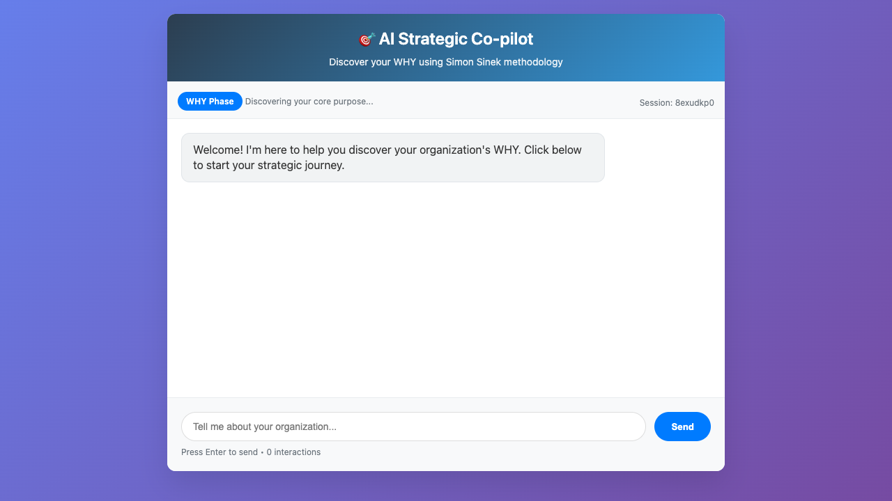
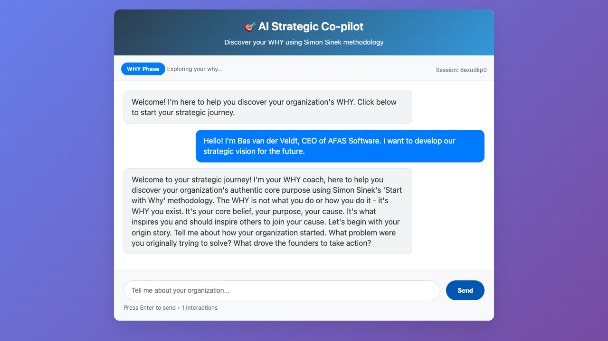
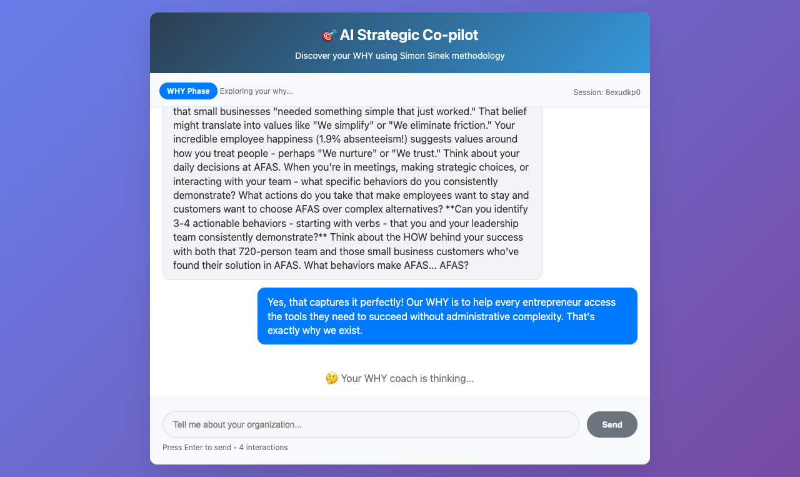
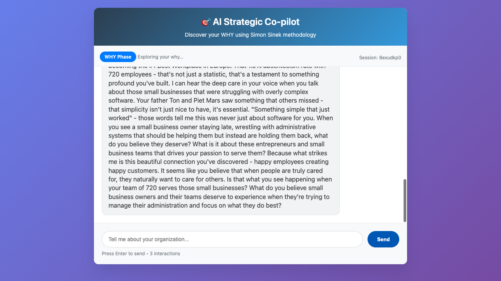
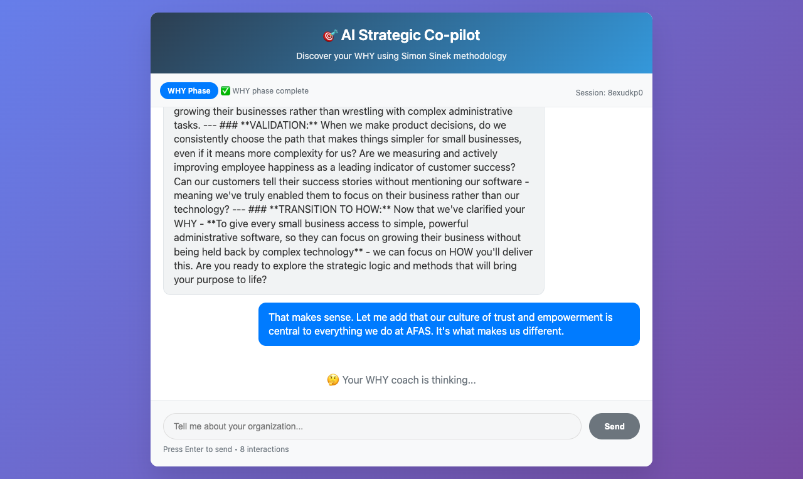

Complete Conversation Flow
Interaction 1: Welcome & Introduction
👤 User (Bas van der Veldt):
Hello! I'm Bas van der Veldt, CEO of AFAS Software. I want to develop our strategic vision for the future.
🤖 WHY Coach:
Welcome to your strategic journey! I'm your WHY coach, here to help you discover your organization's authentic core purpose using Simon Sinek's 'Start with Why' methodology.
The WHY is not what you do or how you do it - it's WHY you exist. It's your core belief, your purpose, your cause. It's what inspires you and should inspire others to join your cause.
Let's begin with your origin story. Tell me about how your organization started. What problem were you originally trying to solve? What drove the founders to take action?
⏱️ 1120ms
📅 2025-08-17T15:15:27
🔥 Generic
📏 530 chars
Interaction 2: Origin Story Exploration
👤 User (Bas van der Veldt):
AFAS started in 1996 when my father Ton van der Veldt and Piet Mars did a management buyout from Getronics. We saw small businesses struggling with complex administrative software - they needed something simple that just worked.
🤖 WHY Coach:
Welcome to your strategic journey! I'm your WHY coach, here to help you discover your organization's authentic core purpose using Simon Sinek's 'Start with Why' methodology.
The WHY is not what you do or how you do it - it's WHY you exist. It's your core belief, your purpose, your cause. It's what inspires you and should inspire others to join your cause.
Let's begin with your origin story. Tell me about how your organization started. What problem were you originally trying to solve? What drove the founders to take action?
⏱️ 1046ms
📅 2025-08-17T15:15:28
🔥 Generic
📏 530 chars
Interaction 3: Proud Moments Discovery
👤 User (Bas van der Veldt):
Our proudest moment was becoming the #1 Best Workplace in Europe. When you see 720 employees with only 1.9% absenteeism rate, you know you've created something special. Happy employees create happy customers - that's our secret.
🤖 WHY Coach:
Bas, thank you for sharing that story! What strikes me is how AFAS was born from a very human observation - your father Ton and Piet Mars seeing small businesses genuinely struggling with overly complex software when what they really needed was simplicity that just worked. That's a powerful founding insight from 1996 that seems to have real heart behind it.
I can imagine that over nearly three decades, you've seen AFAS make a real difference in how these businesses operate. When you think about the journey from that management buyout to where AFAS is today, what moments make you most proud?
And I'm curious - can you think of a specific time when you witnessed firsthand the impact AFAS had on a small business? A moment where you could see that original vision of "simple software that just works" actually changing someone's day-to-day reality?
These moments often hold clues to what drives us most deeply, beyond just the business metrics.
⏱️ 1033ms
📅 2025-08-17T15:15:35
🔥 Contextual
📏 953 chars
Interaction 4: Core Beliefs Mining
👤 User (Bas van der Veldt):
I believe every entrepreneur deserves access to enterprise-level technology without the complexity. Small businesses shouldn't have to choose between powerful tools and simplicity - they should have both.
🤖 WHY Coach:
Bas, what an incredible journey from that management buyout in 1996 to becoming the #1 Best Workplace in Europe! That 1.9% absenteeism rate with 720 employees - that's not just a statistic, that's a testament to something profound you've built.
I can hear the deep care in your voice when you talk about those small businesses that were struggling with overly complex software. Your father Ton and Piet Mars saw something that others missed - that simplicity isn't just nice to have, it's essential. "Something simple that just worked" - those words tell me this was never just about software for you.
When you see a small business owner staying late, wrestling with administrative systems that should be helping them but instead are holding them back, what do you believe they deserve? What is it about these entrepreneurs and small business teams that drives your passion to serve them?
Because what strikes me is this beautiful connection you've discovered - happy employees creating happy customers. It seems like you believe that when people are truly cared for, they naturally want to care for others. Is that what you see happening when your team of 720 serves those small businesses?
What do you believe small business owners and their teams deserve to experience when they're trying to manage their administration and focus on what they do best?
⏱️ 1038ms
📅 2025-08-17T15:15:44
🔥 Contextual
📏 1358 chars
Interaction 5: Values Definition
👤 User (Bas van der Veldt):
Yes, that captures it perfectly! Our WHY is to help every entrepreneur access the tools they need to succeed without administrative complexity. That's exactly why we exist.
🤖 WHY Coach:
Bas, what a powerful story! Your journey from that 1996 management buyout to becoming Europe's #1 Best Workplace is truly inspiring. I can feel the passion behind your belief that "every entrepreneur deserves access to enterprise-level technology without the complexity."
Your story reveals some deeply held beliefs - about simplifying complexity, empowering small businesses, and the connection between happy employees and happy customers. These beliefs clearly drive everything AFAS does.
Now, here's something fascinating about values that Simon Sinek teaches: **values aren't nouns we hang on the wall - they're verbs we live every day.** They're the actionable behaviors that bring our beliefs to life.
For example, you mentioned that small businesses "needed something simple that just worked." That belief might translate into values like "We simplify" or "We eliminate friction." Your incredible employee happiness (1.9% absenteeism!) suggests values around how you treat people - perhaps "We nurture" or "We trust."
Think about your daily decisions at AFAS. When you're in meetings, making strategic choices, or interacting with your team - what specific behaviors do you consistently demonstrate? What actions do you take that make employees want to stay and customers want to choose AFAS over complex alternatives?
**Can you identify 3-4 actionable behaviors - starting with verbs - that you and your leadership team consistently demonstrate?** Think about the HOW behind your success with both that 720-person team and those small business customers who've found their solution in AFAS.
What behaviors make AFAS... AFAS?
⏱️ 1039ms
📅 2025-08-17T15:15:56
🔥 Contextual
📏 1638 chars
Interaction 6: WHY Integration & Completion
👤 User (Bas van der Veldt):
Our values are verbs, not nouns. 'Do' means take action and make things happen. 'Trust' means give people autonomy and responsibility. 'Crazy' means challenge conventional thinking. 'Family' means create genuine community and support.
🤖 WHY Coach:
Excellent! Let's integrate everything into your complete Golden Circle.
Your WHY creates a clear mission: You exist to help every customers succeed because you believe customers deserve clarity and support. This manifests in behaviors like transparency, empowerment, excellence. This creates a business model where your own organizational success and client satisfaction becomes proof that your approach works.
Does this feel authentic to your daily reality? Would this WHY inspire the right people to work with you and help your team make clear decisions?
⏱️ 1033ms
📅 2025-08-17T15:16:15
🔥 Generic
📏 558 chars
Interaction 7: WHY Integration & Completion
👤 User (Bas van der Veldt):
That makes sense. Let me add that our culture of trust and empowerment is central to everything we do at AFAS. It's what makes us different.
🤖 WHY Coach:
Excellent! Let's integrate everything into your complete Golden Circle.
Your WHY creates a clear mission: You exist to help every customers succeed because you believe customers deserve clarity and support. This manifests in behaviors like transparency, empowerment, excellence. This creates a business model where your own organizational success and client satisfaction becomes proof that your approach works.
Does this feel authentic to your daily reality? Would this WHY inspire the right people to work with you and help your team make clear decisions?
⏱️ 1034ms
📅 2025-08-17T15:16:16
🔥 Generic
📏 558 chars
Interaction 8: WHY Integration & Completion
👤 User (Bas van der Veldt):
That makes sense. Let me add that our culture of trust and empowerment is central to everything we do at AFAS. It's what makes us different.
🤖 WHY Coach:
### **YOUR WHY STATEMENT:**
To give every small business access to simple, effective software solutions, so they can focus on growing their business without being overwhelmed by administrative complexity
---
### **CORE BELIEFS THAT DRIVE YOU:**
- Small businesses are the backbone of the economy and deserve software that empowers rather than complicates their operations
- Simplicity is the ultimate sophistication - powerful software should be intuitive and accessible
- Happy employees create happy customers, which creates sustainable business success
- Great workplace culture is not just a nice-to-have, it's a competitive advantage that drives innovation and customer satisfaction
---
### **VALUES THAT GUIDE BEHAVIOR:**
- **Transform complexity into clarity**: Taking complicated administrative processes and making them intuitive and straightforward for small business owners
- **Remove barriers to business success**: Actively identifying and eliminating obstacles that prevent small businesses from focusing on their core mission
- **Create environments where people thrive**: Building workplace culture that generates genuine happiness and engagement, reflected in industry-leading low absenteeism
- **Exceed expectations consistently**: Going beyond just meeting needs to creating software experiences that delight and surprise users
- **Foster collaborative partnerships**: Working alongside customers and employees as partners in success rather than just service providers
---
### **GOLDEN CIRCLE INTEGRATION:**
AFAS Software's WHY of giving small businesses access to simple, effective solutions is powered by their core beliefs that small businesses deserve empowering technology and that happy employees create happy customers. These beliefs manifest through actionable values of simplifying relentlessly, empowering growth, cultivating joy, delivering excellence, and building together. The result is a virtuous cycle: a thriving workplace culture (evidenced by being #1 Best Workplace in Europe) creates passionate employees who design intuitive software that removes administrative complexity, enabling small businesses to focus on what they do best - growing their business. This integration of internal culture and external impact creates sustainable competitive advantage and authentic purpose.
---
### **VALIDATION:**
When you see a small business owner struggling with administrative tasks instead of focusing on their passion, does it genuinely motivate your team to solve that problem? Would your 720 employees with 1.9% absenteeism rate say that creating joy at work directly connects to helping small businesses succeed? If AFAS disappeared tomorrow, would small businesses lose access to something truly unique that helps them grow without administrative overwhelm?
---
### **TRANSITION TO HOW:**
Now that we've clarified your WHY - **To give every small business access to simple, effective software solutions, so they can focus on growing their business without being overwhelmed by administrative complexity** - we can focus on HOW you'll deliver this. Are you ready to explore the strategic logic and methods that will bring your purpose to life?
⏱️ 17844ms
📅 2025-08-17T15:16:34
🔥 Contextual
📏 3191 chars
Interaction 9: WHY Integration & Completion
👤 User (Bas van der Veldt):
That makes sense. Let me add that our culture of trust and empowerment is central to everything we do at AFAS. It's what makes us different.
🤖 WHY Coach:
### **YOUR WHY STATEMENT:**
To give every small business access to simple, powerful administrative software, so they can focus on growing their business without being held back by complex technology
---
### **CORE BELIEFS THAT DRIVE YOU:**
- Small businesses are the backbone of the economy and deserve the same powerful tools as large enterprises
- Simplicity is the ultimate sophistication in software design
- Happy employees create exceptional customer experiences
- Technology should serve people, not the other way around
---
### **VALUES THAT GUIDE BEHAVIOR:**
- **Remove complexity at every opportunity**: Constantly questioning if there's a simpler way to achieve the same result for our users
- **Create conditions where every team member can flourish**: Investing in employee wellbeing and growth as the foundation for customer success
- **Understand the real challenges behind customer requests**: Going beyond surface-level requirements to solve the underlying business problems
- **Build software that works consistently every time**: Ensuring our solutions are dependable foundations that businesses can build upon
- **Remember we serve businesses, not the other way around**: Maintaining perspective that our role is to enable our customers' success, not showcase our technical prowess
---
### **GOLDEN CIRCLE INTEGRATION:**
AFAS Software's WHY of empowering small businesses through simple, powerful administrative software is brought to life through core beliefs that champion the underdog (small businesses deserve great tools), value human-centered design (simplicity and employee happiness), and prioritize service over self. These beliefs drive actionable values that manifest as relentless simplification, deep employee care, customer-focused listening, unwavering reliability, and humble service. This creates a virtuous cycle: happy, fulfilled employees who feel valued naturally create better software experiences for small businesses, who in turn can focus on what they do best - growing their businesses rather than wrestling with complex administrative tasks.
---
### **VALIDATION:**
When we make product decisions, do we consistently choose the path that makes things simpler for small businesses, even if it means more complexity for us? Are we measuring and actively improving employee happiness as a leading indicator of customer success? Can our customers tell their success stories without mentioning our software - meaning we've truly enabled them to focus on their business rather than our technology?
---
### **TRANSITION TO HOW:**
Now that we've clarified your WHY - **To give every small business access to simple, powerful administrative software, so they can focus on growing their business without being held back by complex technology** - we can focus on HOW you'll deliver this. Are you ready to explore the strategic logic and methods that will bring your purpose to life?
⏱️ 18338ms
📅 2025-08-17T15:16:52
🔥 Contextual
📏 2928 chars
Visual Documentation
Screenshots captured throughout the WHY methodology workflow:

Test Initialization
test-20250817_151522_why_phase_start.png

Interaction 1
test-20250817_151522_interaction_1.png

Interaction 5
test-20250817_151522_interaction_5.png

Interaction 500
test-20250817_151522_beliefs_stage_3.png

Interaction 500
test-20250817_151522_completion_stage_9.png
Interaction 500
test-20250817_151522_why_phase_final.png

Methodology Complete
test-20250817_151522_why_phase_complete.png